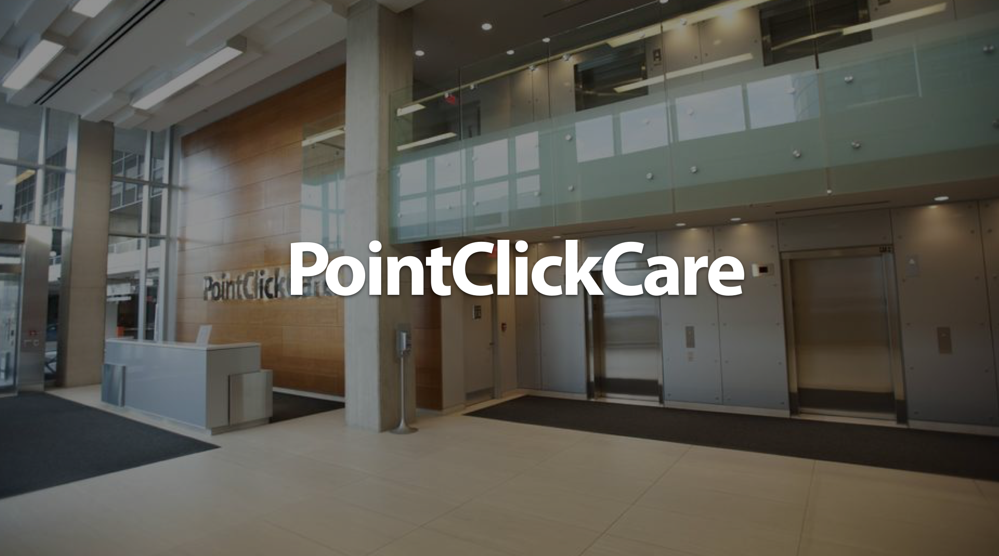
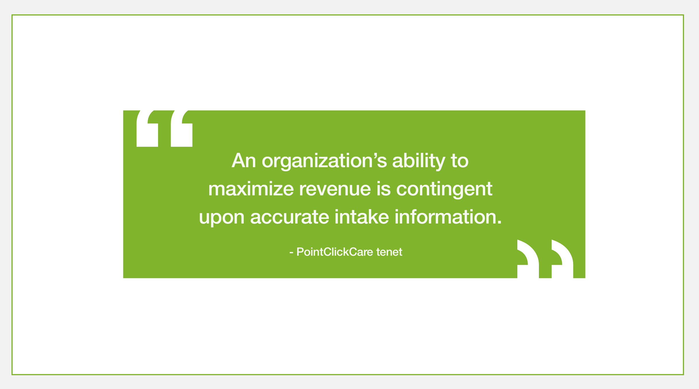
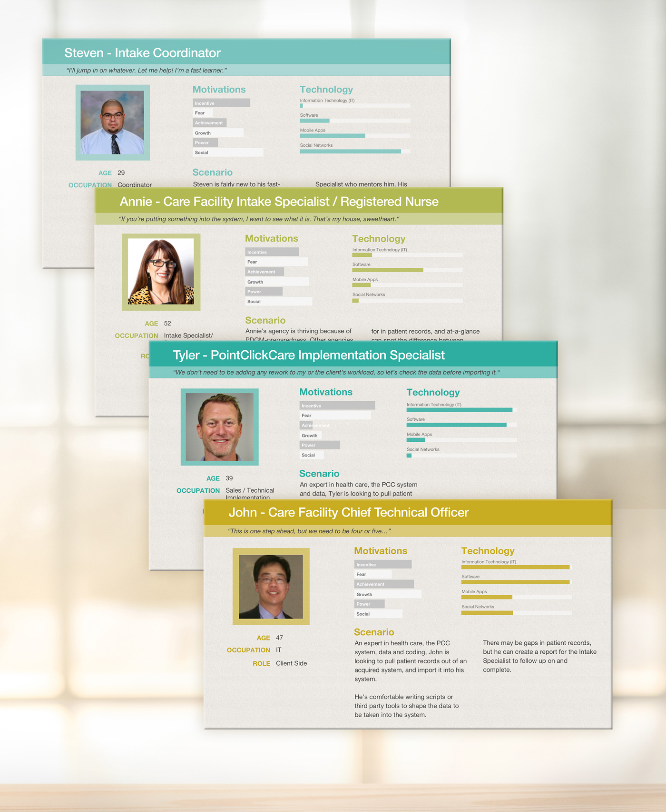

Applied Heuristic Principles
Visibility of System Status
Match System and the Real World
User Control and Freedom
Consistency and Standards
Error Prevention
Flexibility and Efficiency of Use
"Recognition" Rather Than "Recall"
Aesthetic and Minimalist Design
Recognize, Diagnose and Recover from Errors
Give Help and Documentation

Personas and Scenarios for Bulk Patient Importing tool.
After understanding of our users' tech knowledge from this research,
the team decided on a "no UI" option, saving valuable developer time.
PointClickCare
Intake + EHR Data Sharing
PointClickCare
is a Toronto-based electronic health records
system that manages the home care patient process
from Intake, Start-of-Care, and Care Plans through Claims
and Billing to Discharge.
The power of electronic health records (EHRs)
has been broadly over-sensationalized.
Dr Eric Topal,
an influential thinker in the field of innovative medical
technology, estimates only 4% of EHRs' systems
are compatible. In other words, transferring
patients remains a mostly manual process,
involving many phone calls, emails, text messages(!), faxes
and typically 100-150 printed pages per patient. This initative
moves the product and industry closer toward a universal health record.
Objective
Reduce friction and errors within the patient intake/transfer process
Tactics
We digitized five key steps in the Intake process:
Lead Tracking
Duplicating the real world model we saw during our field visits
(Post-It notes, white boards, etc.), we created a simplified lead form
with multiple areas for basic notes, segmented controls
to reduce drop-down fatigue and
added quick links for next steps for the patient.
Intake UI Redesign
We introduced a crisper, modular UI to replace a
static form approximately 6500 pixels long,
allowing the Intake
Specialist to add sections as needed.
We also made it possible for companies to customize their own
presets, so they could adjust sections in the UI
at a global or admin level.
IVR Touch Tone Translator
Some companies use Medicare's IVR system to check
eligibility. It's a touch-tone system with a staggering
amount of complexity. It's layered in error potential
and typically takes 30-45 minutes
to complete five or so basic bits of data.
For example, the eighth number in
a Medicare number is an alphabetic value, so a user
needs to press "*" to indicate a letter, then "2" twice
for the letter "B", and then "8" for the eighth
position in the Medicare number.
Our solution is a front-end Javascript "translator"
so the Intake Specialist enters the data into
the webform, translates and then touch-tones the translated series
into the Medicare IVR system. It reduces errors and
cognitive load, and saves time. Despite improvements
like this, the user experience still has significant
limitations due to the US Department of Health
and Human Services' infrastructure requiring the IVR.
IVR Translator Concept.pdf
Document Repository
Prior to this feature, intake documentation (100-150 pages)
was stored along with the patient charting, vitals
and medication information. We applied a category
and tagging system, so a user's role would automatically
filter out unneeded assets.
Document Repository wires (Axshare)
Bulk Patient Import
Because of a dramatic restructuring in 2020 Medicare legislation,
smaller senior health care organizations are liquidating at a rapid pace.
This tool allows larger agencies (500+ patients) to quickly merge
and acquire patients and reduce or remove any lapse in care.
Bulk Patient Import Wires (Axshare)
Read more ►
Goals
Productivity
Research Methodologies
- Contextual Inquiry
- Direct Observation
- Moderated Testing
- Personas
- Scenarios
- Stakeholder Interviews
- User Interviews
Key Findings
Our biggest assumption was that the Intake
process was slow, confusing and prone to
error. We were correct, however we found
most of the work was being done outside
the application. Intake specialists were using sticky notes,
white boards and their own process checklists.
And only when all the information was collected
did they enter it into the system. We were initially
confident in our application because analytics showed us
the Intake UI took only about 5 minutes to complete.
But after our discovery, we found the entire intake
process took about two hours per patient.
Another big surprise was the intake specialists'
inventiveness. They were handling
a tremendous throughput of patient data; some
had created their own checklists, and one
user created a series of folders and actions
within MS Outlook that rivaled the usability
and flexibility of our application.
Comparable Products
CareCloud, Epic, GE Centricity
Deliverables
Personas, Scenarios, Wireflows, Data Hierarchy Map, Heuristic Analysis,
Wireframes, High-Fidelity Designs
Team
UX/UI (myself), Junior Researcher
Challenges
The product roadmap was dense with features
that had been promised to prospective clients.
Many other features were driven by clients' executives'
feedback instead of end users. And front-end technology
understanding and UX maturity within our product team
were limited as well. As a result, many features that were developed
were flawed, outdated or useless to the end user.
To remedy this, I spent more time iterating and socializing
smaller design iterations and rationale. It slowed our
velocity, but helped the broader team understand
how design hierarchy decisions are driven by strategic thinking.
I also advocated and produced more remote and
in-person usability tests, user session recordings,
personas and scenarios, supporting analytics,
visualizing information architecture as well as
showing a range of options ("T-Shirt Sizing"
project estimation) to help shape the product
team's view beyond a skeleton of a feature.
Next Steps
- Usability Test Intake UI and Iterate
- Expand Lead Tracking's Note Technology
- Allow Intake UI to Check Care Scheduler
- Create Single Patient Review, Modify and Import (True EHR Interoperability)
Supporting Artifacts